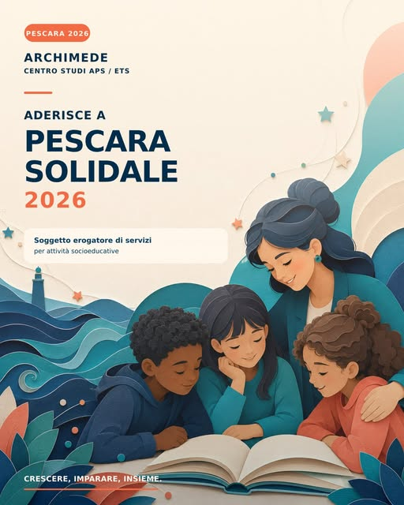

Archimede · RisorseCrescere, imparare.
Crescere, imparare.
Insieme.
Archimede Centro Studi APS ETS aderisce a Pescara Solidale 2026 come erogatore di attività socioeducative.
Edizione 2026 · aggiornato al 6 ottobre
Hai già un voucher?
Le domande delle famiglie si sono chiuse il 12 giugno 2026. L’avviso richiede l’attivazione di almeno un servizio entro il 30 settembre 2026: questa scadenza è già trascorsa.
Se hai già attivato il voucher, le attività e le relative transazioni devono concludersi entro il 31 dicembre 2026. Se non l’hai attivato, o hai dubbi sulla tua posizione, verifica prima con il Comune: l’avviso prevede la decadenza per mancata attivazione.
Avvisi e comunicazioni del Comune ↗
I servizi nel catalogo comunale3–6 anni 6–11 anni 11–14 anni 14–17 anni
Il voucher, da Archimede.
Queste sono le attività socioeducative di Archimede presenti nel catalogo 2026.
Doposcuola primaria
Doposcuola scuola media
Doposcuola superiori
La copertura dipende dal voucher assegnato e dal servizio scelto. Consulta il catalogo ufficiale per servizi e tariffe ↗, oppure chiedi alla segreteria prima di prenotare.
Una guida pratica
Come utilizzare il voucher.
Per chi è già beneficiario e ha un voucher attivo.
Controlla il tuo voucher
Verifica l’ammissione, le comunicazioni ricevute e lo stato di attivazione. Il voucher è personale e non trasferibile; fa fede l’importo assegnato dal Comune.
Concorda il servizio con noi
Contatta Archimede, indica il servizio e la fascia d’età. Verifichiamo insieme disponibilità, tariffa e importo che intendi utilizzare.
Porta voucher e documento
Presenta il voucher in PDF sul telefono oppure stampato, con il suo codice QR o alfanumerico, e un documento del titolare. Non serve installare un’app per mostrarlo.
Conferma l’utilizzo
L’operatore verifica il voucher e registra la transazione per il servizio concordato. Chiedi conferma dell’importo utilizzato e del saldo residuo. L’eventuale quota oltre il saldo resta a tuo carico.
Il voucher non è convertibile in denaro. Le istruzioni ricevute dal Comune e dal gestore del servizio prevalgono su questa guida.
Parliamone insieme
Organizziamo il prossimo passo.
Per scegliere un servizio Archimede e concordare l’utilizzo del voucher, contatta la segreteria. Per ammissione, mancata attivazione o altre questioni amministrative, rivolgiti al Comune di Pescara.
Scrivici su WhatsApp Oppure via email ↗Informazioni e documenti ufficiali.
- Catalogo Pescara Solidale 2026 — Comune di Pescara ↗
- Avviso attività socioeducative 2026 (PDF) ↗
- BuoniSpesa Lascaux — funzionamento del voucher ↗
Informazioni verificate il 6 ottobre 2026. Per aggiornamenti e modifiche consulta le comunicazioni del Comune.